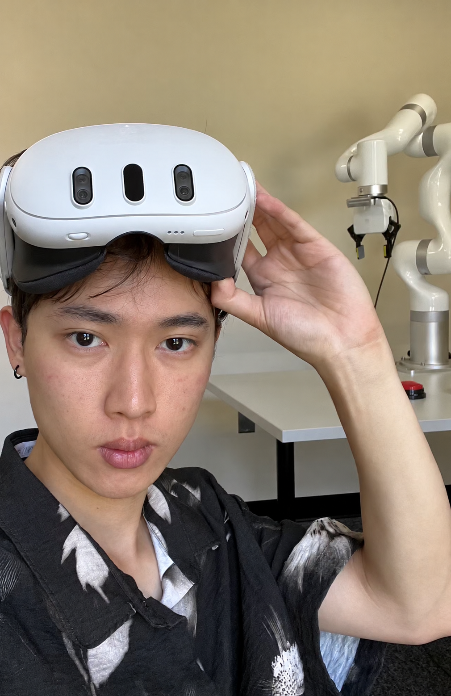

PAIR: Bridging Perception and Action in Vision-Language-Action Models
K. Feng, G. Sun, Ang Li · arXiv, 2026
Computer Science · University of Maryland, College Park

I am a student in Computer Science at the University of Maryland, College Park, working on embodied AI and representation learning.
ROCKET accepted to NeurIPS 2026.
K. Feng, G. Sun, Ang Li · arXiv, 2026
K. Feng, G. Sun, et al. · arXiv, 2026
G. Sun, T. Du, K. Feng, et al. · arXiv, 2026
G. Sun, K. Feng, et al. · arXiv, 2026
Q. Wang, K. Feng, et al. · arXiv, 2026